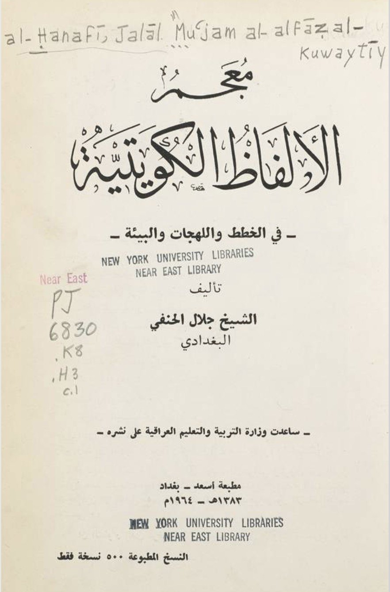

بغداد، ١٩٦٤ · صفحات من كتاب الشيخ جلال الحنفي البغدادي، مطبعة أسعد، بغداد، ١٩٦٤ (نسخة مكتبات جامعة نيويورك)
معجم الألفاظ الكويتية: دليل المحتار طُبع في بغداد سنة ١٣٤٢هـ، والعائلة في شرق
ما هي
الصفحة ٤١٦، من مراجع المعجم: «دليل المحتار في علم البحار، تأليف عيسى بن عبدالوهاب بن عبدالعزيز بن قطامي، أتم تأليفه سنة ١٣٣٤هـ، طبع في مطبعة دار السلام ببغداد سنة ١٣٤٢هـ». والصفحة ١٩٧ نقلا عن تاريخ الكويت لابن رشيد (١٩٢٦): في شرق «بيت عيسى القطامي صاحب دليل المحتار في علم البحار». والصفحة ٣٠: الباطلي آلة لتعيين هبوب الريح «ذكرها القطامي في كتابه». والصفحة ٣١٦: «الگطامي: القطامي أسرة كويتية»، وقول المؤلف إن مسجد القطامي أسسه سلطان بن ماجد.
أهميتها
يذكر الطبعة الأولى لدليل المحتار في بغداد سنة ١٣٤٢هـ (١٩٢٣ إلى ١٩٢٤)، وسنة إتمام عيسى لتأليفه ١٣٣٤هـ (١٩١٥ إلى ١٩١٦).
صور الصفحات


ملاحظات
تذكر مصادر أخرى سنة ١٩٤٢ (الخالدي) وسنة ١٩٥٠ لطبعات لاحقة. وتأسيس سلطان بن ماجد لمسجد القطامي قول المؤلف، ولوحة المسجد تؤرخه بسنة ١٢٥٠هـ (١٨٣٤م). نعرض هنا الصفحات الأولى فقط، ويرى أفراد العائلة بعد تسجيل الدخول كل الصفحات وعددها 5.
أسماء أخرى
المصادر
جلال الحنفي، معجم الألفاظ الكويتية في الخطط واللهجات والبيئة، بغداد، ١٩٦٤
كيف كُتب هذا النص: مصورة من الصفحات المطبوعة.
افتح في الموقع التفاعلي